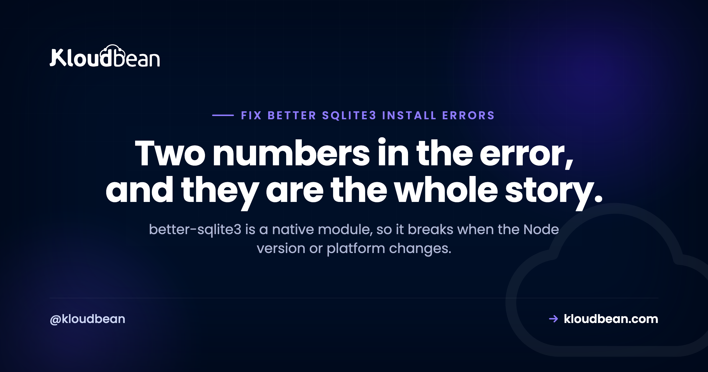

better-sqlite3: Fixing NODE_MODULE_VERSION and Build Errors on Deploy

better-sqlite3 is fast and pleasant to use, and it fails in a way that catches people out, because it is not pure JavaScript. It compiles down to a binary, better_sqlite3.node, and that binary is built against one specific Node.js ABI on one specific platform. Change the Node version, change the operating system, or copy node_modules from your laptop to a server, and the binary no longer matches the runtime trying to load it. The error looks alarming and is actually one of the more informative messages in the Node ecosystem: it prints the number it was built for and the number it needs.
The binary was compiled for a different Node.js version than the one running it. Rebuild it against your current runtime with npm rebuild better-sqlite3 --build-from-source, or delete node_modules and run a fresh npm ci on the machine that will actually run the app. To stop it recurring, pin your Node major version in package.json engines, never copy node_modules between machines, and install dependencies on the target platform rather than shipping them.
Read the error, it gives you both numbers
The message is long enough that people skim it, which is a shame because it contains the diagnosis.
Error: The module '/app/node_modules/better-sqlite3/build/Release/better_sqlite3.node'
was compiled against a different Node.js version using
NODE_MODULE_VERSION 108. This version of Node.js requires
NODE_MODULE_VERSION 115. Please try re-compiling or re-installing
the module (for instance, using `npm rebuild` or `npm install`).NODE_MODULE_VERSION is the ABI version, the contract between compiled add-ons and the Node binary. It changes when V8's internals change, which is why it moves with major Node releases and not with patch releases.
So this error says: the binary on disk was built for Node 18, and something is trying to load it on Node 20. That is the entire problem. You are not looking for a bug, you are looking for where two Node versions got involved.
The ABI table, and how to check what you are running
Map the numbers to versions and the message usually explains itself immediately.
| Node major | NODE_MODULE_VERSION |
|---|---|
| Node 18 | 108 |
| Node 20 | 115 |
| Node 22 | 127 |
| Node 23 | 131 |
| Node 24 | 137 |
Older majors have their own numbers, and Node publishes the full registry in its repository if you meet one from an ancient build. Electron has a separate series entirely, which is why Electron projects hit this constantly: the Electron ABI is not the Node ABI even when the Node version inside looks familiar.
To see what a given runtime expects, ask it:
# The ABI your current node expects
node -p "process.versions.modules"
# Which node is actually being used, which is often the surprise
node -v && which -a nodeThat second command earns its place. A remarkable share of these reports come down to two Node installations on one machine, where a version manager is active in an interactive shell but a service, cron job, or process supervisor starts with a different one on its PATH.
Why the prebuilt binary is sometimes just absent
better-sqlite3 publishes prebuilt binaries so most people never compile anything. On install it tries to download one matching your exact combination, and if there is no match it falls back to building from source with node-gyp.
You can see all four dimensions of that match in the other common error:
prebuild-install warn install No prebuilt binaries found
(target=20.11.0 runtime=node arch=x64 libc=musl platform=linux)Four things have to line up: the ABI, the CPU architecture, the platform, and the C library. Miss any one and you are compiling from source, which needs a toolchain that many minimal images do not include. Then the failure changes shape entirely, into gyp ERR! output about a missing python3 or no C++ compiler, and people reasonably but wrongly conclude the package is broken.
So there are two distinct failures wearing similar clothing. An ABI mismatch means a binary exists but is wrong. A build failure means no binary exists and the fallback could not run. The fixes differ, so read which one you have before acting.
The situations that actually produce this
| What happened | Why it breaks | Tell |
|---|---|---|
Committed or uploaded node_modules | Binary built on your OS and Node, loaded on another | Fails immediately on first boot after deploy |
| Node upgraded on the server | Existing binary targets the old ABI | Worked yesterday, broke after a platform or image update |
| Version manager vs service runtime | Installed under one Node, started under another | which -a node shows more than one |
| Docker build stage differs from run stage | Compiled in one image, executed in another | Builds clean, crashes on start |
| Alpine or other musl base | No matching prebuild, no toolchain to compile | libc=musl in the warning |
| Electron project | Electron ABI differs from Node ABI | Works with node, fails in the app |
The first row is the most common and the most avoidable. node_modules is not portable when any dependency is native. Treat it as build output belonging to one machine, not as part of your source.
Fixing it, in the order that actually works
Start with the cheapest step and escalate only if needed.
1. Rebuild against the current runtime. Fast, and often sufficient when the source tree is otherwise fine.
npm rebuild better-sqlite3 --build-from-source2. Reinstall cleanly. If a rebuild does not take, remove the artefacts so nothing stale survives. Doing this on the machine that will run the app is the important part.
rm -rf node_modules
npm ci3. Make sure you are on the Node version you think you are. Pin it so the question stops being ambiguous.
// package.json
{
"engines": { "node": ">=20 <21" }
}Pinning a range like this is more useful than a single exact version, because patch releases do not change the ABI and forcing an exact patch means chasing security updates for no benefit. Pin the major.
4. If it must compile, give it a toolchain. On a Debian or Ubuntu server that is python3, make, and g++. Worth understanding that build tools on a production host are a slight increase in what is installed there, which is one more argument for building during deployment rather than on the running server.
The structural fix, though, is not a command. It is that dependencies should be installed by the deploy that targets the machine, so the binary is produced in the environment it will run in. A pipeline that checks out your repository, runs npm ci, builds, and then starts the app cannot produce this error, because there is only ever one Node and one platform involved. That is also why this class of bug quietly disappears once builds are automated. Our guide to auto-deploy from GitHub covers that setup, and why Node apps crash on deploy covers the wider family of environment-gap failures.

Alpine and musl, the quiet one
Alpine gets picked for small images, and it uses musl rather than glibc. Prebuilt binaries for musl are less consistently available across packages, so on Alpine you are more likely to compile from source, and Alpine's minimal base does not ship a compiler.
You have two honest choices. Add the toolchain, accepting a larger image and longer installs:
apk add --no-cache python3 make g++Or use a glibc base such as a Debian slim image, where a matching prebuild is more likely and nothing needs compiling. My preference for anything with native dependencies is the second one. The image is larger and the build is simpler, faster, and less likely to break when a dependency changes its prebuild matrix. Saving a few dozen megabytes is rarely worth a build that fails on a Friday.
The multi-stage build trap
This one is worth calling out because the symptom is misleading: the build succeeds cleanly and the app crashes the moment it starts.
It happens when dependencies are installed in one stage and copied into a final stage running a different Node version. The compile was correct for the build image. The runtime is a different ABI. Nothing in the build output hints at it.
The fix is to use the same Node major in both stages, and to be suspicious of a floating tag like node:latest in one of them, because that turns your deploy into a moving target that breaks whenever upstream advances a major version. If you pin one stage, pin both.
The Python cousin: No module named '_sqlite3'
Python developers meet a related failure with a different root cause, and it is worth including because the fix is genuinely unobvious.
ModuleNotFoundError: No module named '_sqlite3'Python's sqlite3 module is a wrapper around a C extension that is compiled when Python itself is built. If the SQLite development headers were not present at that moment, Python builds successfully and simply omits the extension. So you get an interpreter that appears healthy and has no SQLite support, which is a confusing state to debug.
This bites people who build Python from source or use a version manager. The fix is to install the headers and then rebuild the interpreter, in that order.
# Debian or Ubuntu
sudo apt-get install -y libsqlite3-dev
# then rebuild the interpreter, for example with pyenv
pyenv install 3.12.4Reinstalling packages will not help, because the missing piece is part of Python, not part of your dependencies.
If you are keeping SQLite in production, do these three things
Whether SQLite belongs in production at all is a separate question, and we argue it properly in adding a managed database to your app, including the redeploy-wipes-your-data problem and the write-concurrency ceiling. Rather than repeat that, here is the operational side for the cases where SQLite is genuinely the right call, which do exist: read-heavy workloads, a single process, one machine, modest write volume.
Turn on WAL mode. The default journal makes readers and writers block each other. Write-ahead logging lets reads continue during a write, which is the single biggest improvement available.
db.pragma('journal_mode = WAL');
db.pragma('busy_timeout = 5000');Be clear about what WAL does not do: there is still one writer at a time. It reduces contention, it does not give you concurrent writes. The busy_timeout tells a blocked connection to wait rather than fail instantly with SQLITE_BUSY, which converts a large share of transient errors into slightly slower queries.
Back it up correctly. Copying the file with cp while the application is writing can produce a corrupt or torn copy, especially in WAL mode where recent commits live in a separate file. Use an interface that understands the format.
# A consistent snapshot of a live database
sqlite3 app.db ".backup '/backups/app-$(date +%F).db'"
# Or, from SQL
# VACUUM INTO '/backups/app.db';Know where the file lives. A SQLite database is a file on a disk, so its durability is the durability of that disk and whatever backs it up. On a persistent server volume that is a real answer. On any environment with an ephemeral filesystem it is not, and the data disappears on the next deploy with no error to warn you.
One modern note worth knowing: Node 22 and later include a built-in node:sqlite module. It is experimental and its API differs, so it is not a drop-in replacement, but it needs no native build step, which removes this entire category of problem. Worth watching if native compilation is your main pain.
Related reading
For the database decision itself, adding a managed database to your app and MySQL versus PostgreSQL. For deployment failures around this one, Node apps crashing on deploy, Cannot find module, and auto-deploy from GitHub. On configuration and moving data, environment variables done right and migrating with pg_dump and mysqldump. And on keeping copies you can restore, server backups.
Outgrown a file on disk?
One-click managed PostgreSQL, MySQL, MariaDB, MongoDB, Redis, and Elasticsearch with automatic backups and private access, plus Git deploys that install on the target so native modules build once, correctly. From $8/mo, with free migration assistance. Start at kloudbean.com.
6 managed databases · Automatic backups · Private access · Git deploy with live build logs · Flat from $8/mo
FAQ
What does NODE_MODULE_VERSION mean?
It is the Node.js ABI version, the binary contract between compiled add-ons and the Node runtime. It changes with major Node releases because V8 internals change, so a module compiled for one major will refuse to load on another. Node 18 is 108, Node 20 is 115, Node 22 is 127, Node 24 is 137.
How do I fix "was compiled against a different Node.js version"?
Rebuild the module against the runtime that will load it: npm rebuild better-sqlite3 --build-from-source. If that does not resolve it, delete node_modules and run npm ci on the machine that runs the app. Then find out why two Node versions were involved, because otherwise it returns on the next deploy.
Why does better-sqlite3 need to compile at all?
It is a native module. It bundles SQLite as C code and exposes it through a compiled binary rather than being pure JavaScript, which is where its speed comes from. Prebuilt binaries are published for common combinations, and when none matches your ABI, architecture, platform, and C library, npm falls back to compiling from source.
Why do I get "No prebuilt binaries found"?
No published binary matched your exact combination of target ABI, runtime, architecture, platform, and C library. The most frequent cause is a musl-based image such as Alpine. It then tries to build from source, so the next error you see is usually about a missing python3 or C++ compiler rather than about SQLite.
Can I copy node_modules to my server?
Not safely, and this error is the usual consequence. Any native dependency compiles for one platform and one ABI, so a folder built on macOS will not load on Linux, and one built under Node 18 will not load under Node 20. Ship your package.json and lockfile and install on the target instead.
Does npm rebuild always fix it?
It fixes the mismatch when a working toolchain or a matching prebuild is available. It cannot help if the machine has no compiler and no prebuild exists, in which case you need build tools or a different base image. And it does not address the cause, so if your process installs under one Node version and runs under another, the error comes back.
How do I stop this happening again?
Pin your Node major version in package.json engines and make sure the runtime matches it. Install dependencies during deployment on the target machine rather than uploading them. Keep node_modules out of version control. If you use multi-stage builds, pin the same Node major in every stage and avoid floating tags.
Is SQLite fine for production?
For a single process on one machine with read-heavy traffic and modest writes, yes, provided the file sits on a persistent disk and you back it up with SQLite's own backup command rather than cp. It becomes the wrong choice once you need concurrent writers, more than one application server, or a filesystem that survives redeploys. We cover that decision in detail in our managed database guide.
What is the difference between WAL mode and the default?
By default, readers and writers block each other. In write-ahead logging mode, reads proceed while a write is in progress, which removes most everyday contention. There is still only one writer at a time, so WAL improves concurrency without providing concurrent writes. Pair it with busy_timeout so blocked connections wait briefly instead of failing with SQLITE_BUSY.